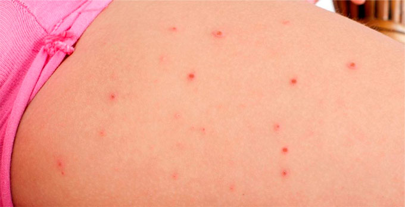

Vindecarea psoriazisului s-a dovedit a fi posibilă
Bună ziua tuturor, mă numesc Elisabeta, am 31 de ani. Vreau să împărtășesc o istorie sinceră de combatere a psoriazisului. Cum mi-a distrus anii de școală, cum au încercat să-l trateze și la ce a dus asta. Dacă nu ar fi fost unchiul meu care a găsit o modalitate de a scăpa de psoriazis – nu aș fi putut face față acestei boli singură. Această poveste vă va ajuta să începeți tratamentul adecvat imediat, să economisiți timp, bani și sănătate.
Vreau să împărtășesc un pic de istorie sinceră de combatere a psoriazisului. Cum mi-a distrus toți anii de școală, cum au încercat să-l trateze și la ce a dus asta. Dar cel mai important, am scăpat de el! Această poveste va ajuta să evitați greșelile și să începeți imediat tratamentul potrivit.
Preistoria școlară
În școala primară am fost o fată foarte sociabilă, distractivă și veselă. Dar apoi lucrurile s-au schimbat. Au început să mă batjocorească, să mă evite, să râdă de mine, de multe ori să mă ducă la lacrimi - toate acestea sunt din cauza psoriazisului.
 psoriazis, clasa a 4-a
psoriazis, clasa a 4-a
Atunci am experimentat cel mai adevărat stres. Îmi amintesc imagini ca și cum aș fi stat într-un colț al unui coridor lung, zgâriindu-mi mâinile până la carne, murdărind cu sânge o bluză călcată și spălată de mama și în același timp am plâns.
Când agresiunea asupra mea a trecut peste limitele, profesorii au avut conversații cu colegii de clasă, spunând că Elisabeta are nevoie de sprijin, are o boală gravă și nu este contagioasă. Dar vorbele au fost suficiente doar până când profesorul a plecat, iar eu am fost insultată și mai mult. La urma urmei, conversațiile au luat timp liber prețios de la colegii de clasă.

Mai aproape de 16 ani, la toți au fost dependente de hormoni. Colegii mei de clasă au început să facă make-up, să poarte fuste, să-și acopere coșurile. De asemenea, am început să-mi fac make-up și psoriazisul nu a rezistat unei astfel de artă – toată fața a devenit în pete roșii aprinse. După un astfel de caz, am rugat-o pe mama să meargă la spital ca să-mi prescriu un concediu medical pentru viață, doar să nu merg la școală. Dar mi l-au prescris doar pentru câteva săptămâni.
Spitale. Medicamente. Groază.
De îndată ce au apărut primele plăci de psoriazis, părinții au început să mă ducă la spitale. La medic am sperat întotdeauna să aud ceva bun, niște cuvinte de speranță, dar văzând fețele triste ale părinților și fețele serioase ale medicilor, mi-am dat seama că totul a fost foarte rău. Atunci am aflat pentru prima dată din conversație despre boli precum HIV și hepatita.
A fost foarte înfricoșător. Am avut mâncărimea pe tot corpul meu în mod constant, am rupt bucăți de piele, au apărut răni care sângerau. Părinții nu s-au predat. Cu frică și ochi speriați, m-au dus de mână la medici, s-au sfătuit, au încercat să mă ajute cumva.

După fiecare vizită la medic, am fugit la farmacie și am cumpărat tot ce a prescris pe hârtie. Acasă, m-au făcut să mă ung cu tot felul de unguente și să iau un pumn de pastile albe. Pentru a spori efectul, părinții au adăugat în arsenalul lor de remedii populare - o baie cu ierburi și săpun puturos.
Complicații
Cursul medicamentelor hormonale a dat un sens - plăci au dispărut puțin. Prețul acestui lucru a fost ridicat: am început să mă îngraș. Am fost forțată să urmez o dietă, toate dulciurile din casă au dispărut o dată pentru totdeauna. Dar restricția mi-a permis să reduc ritmul de creștere în greutate.
Atunci am cântărit aproximativ 80 de kilograme. După efectuarea testelor, s-a constatat că medicamentele au dat o complicație puternică asupra ficatului. După un timp, întregul corp a început să fie acoperit cu furuncule dureroase uriașe.

Medicii au declanșat alarma, mi-au dat un concediu medical pentru o lună și i-au internat în spital. Atunci m-am bucurat atât de mult că nu voi merge la școală, dar când am început să-mi facă injecții, să facă transfuzii de sânge și să-mi facă în fiecare zi să mă supun examinărilor nesfârșite - totuși eram fericită, pentru că este mult mai bine decât școala. Apropo, am fost hrănită acolo teribil, de aceea am pierdut aproape toate kilogramele în plus.
După spital, boala a avut loc într-un ritm calm. Am terminat școala, am început studiile universitare.
Universitate, recidive, ultima speranță
Totul a fost normal la început, dar după cum a început sesiunea și au venit oameni noi, am început să fiu nervoasă - psoriazisul a început să progreseze.
A lovit 60% din piele, erupția a fost peste tot: piept, gât, cap, brațe, picioare și spate. Toate acestea mă mâncau, era imposibil să tolerez... din nou carne, sânge.

Fiind stresată cu descuamarea, am alergat acasă să plâng în pernă. Toată ziua I-am trimis pe toți la naibă și n-am deschis ușa în camera mea. În a doua zi, fiind un pic calm și înfometată, am intrat în bucătărie.
Am fost foarte surprinsă când mi-am văzut unchiul. Nu ne-am mai văzut de ani de zile! Obișnuiam să petrecem ore vorbind la telefon despre cine au încercat metodele și cum nu au funcționat. Apoi am încetat să ne mai sunăm și ne-am pierdut unul pe celălalt.
În acea zi, el nu a avut nici o pată pe corp! Am avut un șoc și am avut o întrebare în cap: de ce nu m-a sunat și nu mi-a spus că a găsit metoda?
Unchiul a citit întreaga gamă de emoții în ochii mei și a invitat la masă.
Povestea lui a durat câteva ore. Esența sa este aceasta: el a început să aibă complicații grave pe bază de nervi și a decis să meargă să fie tratat în străinătate. Acolo, el a vizitat câteva zeci de medici de top și doar unul a putut să-l ajute.
După ce l-am ascultat, l-am întrebat cât de mult a dat banii. Suma pe care a numit-o, ar fi trebuit să economisesc câțiva ani. Un pic supărată am vrut să merg să plâng mai departe, dar unchiul meu m-a oprit, a dat un medicament numit și a adăugat că el a fost capabil să vindece numai cu asta.
Un nou remediu de la unchiul meu
Când toți au plecat, am început cu lăcomie să studiez acest remediu. De fapt, totul s-a dovedit simplu: să aplic produsul pe plăci. Am început cursul.

Am venit la sesiune. O grămadă de oameni, privirile la petele mele și absolvirea examenului mi-au răsturnat din nou sistemul nervos, dar de data aceasta psoriazisul nu a progresat. Am suspectat ceva bun.
În fiecare zi, uitându-mă în oglindă, am văzut plăcile care dispar. Am enumerat pete care au dispărut. Și apoi am început să primesc complimente la universitate, de la care mă topeam ca zăpada pe vreme caldă. Plăcile au devenit ca pielea arsă de soare și nu sperie oamenii. Un băiat a început să mă curteze o dată, dar este o altă poveste.
Am început să port pantaloni scurți și tricouri mult mai încrezător, starea mea de spirit nu a scăzut niciodată până la lacrimi, iar cursul medicamentului se apropia de sfârșit.
Am început să plâng din nou, dar pentru un alt motiv: m-am bucurat că pielea a devenit ca la toți oameni. Pe timp de noapte, uneori, am visat că am fost acoperită cu pete care emanau sânge, dar când m-am trezit, am expirat astfel încât candelabrul se balansa pe tavan.

După câțiva ani recidivele nu s-au mai întâmplat, oricât de mult aș fi nervoasă. Și chiar în această săptămână am văzut în vânzare același remediu! Producătorul a început să vândă produsul prin intermediul site-ului său oficial. Voi atașa link-ul de mai jos. Mult noroc, nu vă îmbolnăviți!